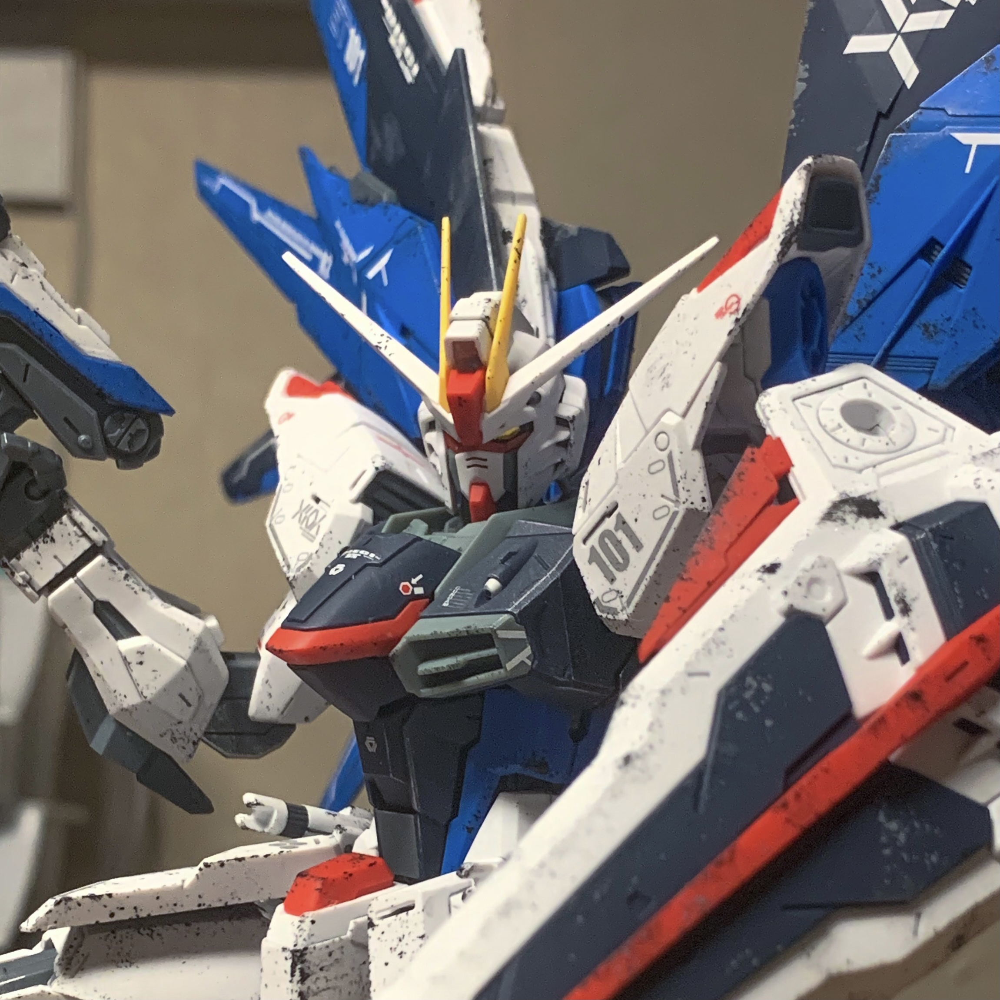
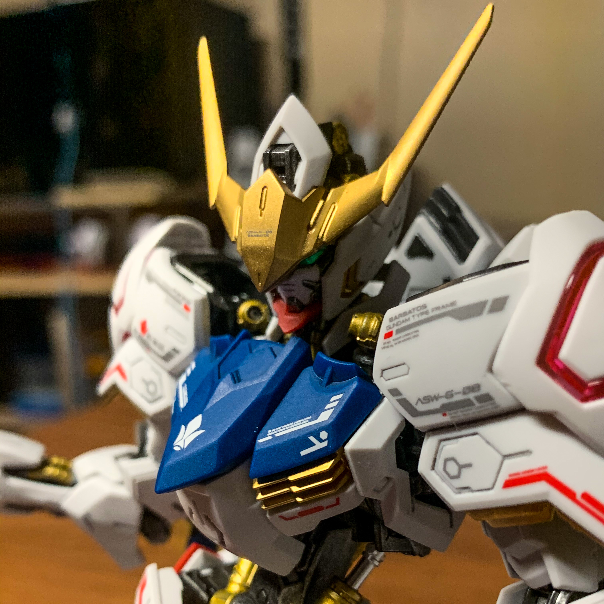
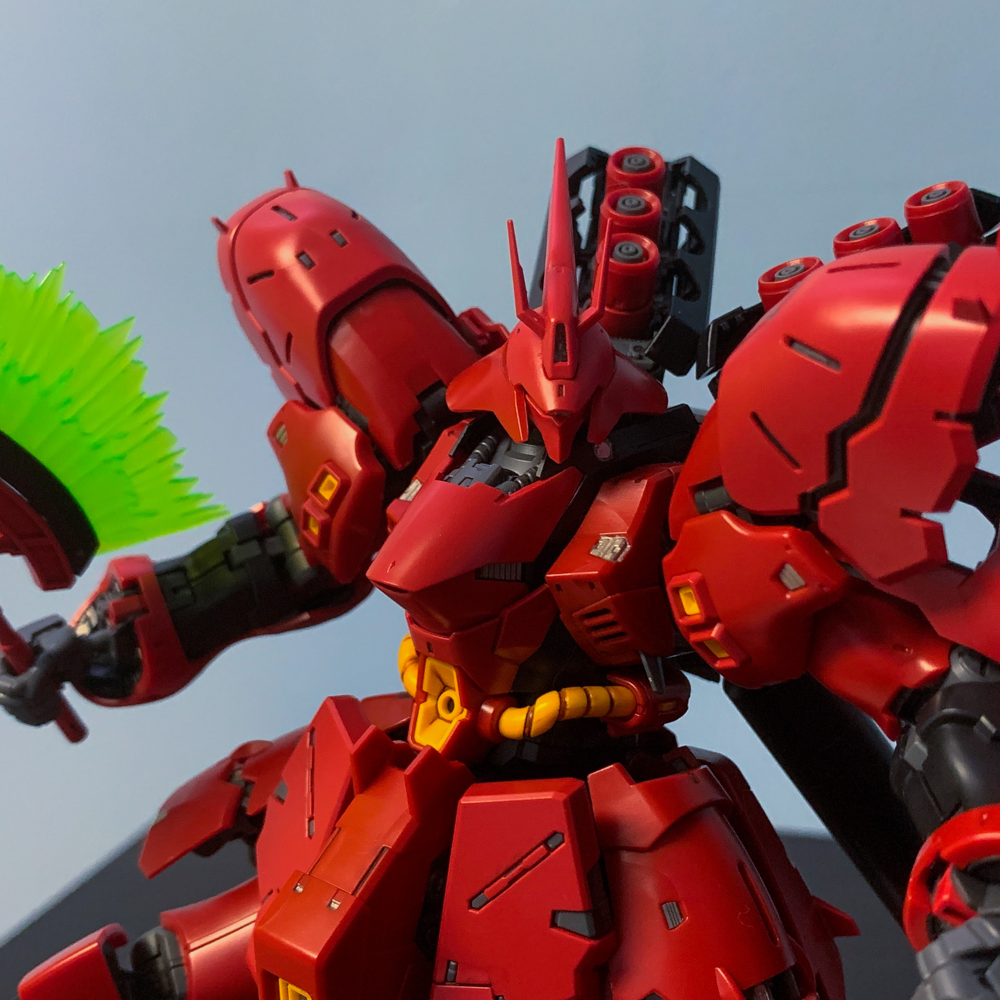

JC's Gunpla
Building an army of tiny giant robots.
Gallery
Images of some of the models I've built.

For my 10th kit, I built the master grade version of the mobile suit that caught my eye back in 2018 and got me hooked onto the hobby: The ZGMF-X10A Freedom Gundam. Since this kit was my 10th I built it as a celebration of 2 yeas of being in the hobby, going all out with extra work, doing things like adding waterslide decals, a matte topcoat, and some weathering battle damage using some paint and a sponge. although my technique with that last one needs some improvement, I'm still really proud of the end result.

Out of all the Gundam Anime I've watched, Mobile Suit Gundam: Iron-Blooded Orphans is my absolute favourite. When Bandai announced that the lead suit of the series: The ASW-G-08 Gundam Barbatos, was going to get the Master Grade treatment, I knew I had to build it and go all out on making it look good. And go all out I did, painting the entire mechanical frame metallic colours, painting all the yellow parts a metallic gold, adding waterslide decals, and a matte topcoat. While it may not have the shelf prescence that other kits in my collection have, I consider this one (alongside the Freedom) to be some of my best works.

While I haven't watched much of the series that take place in the original Universal Century timeline, I am a big fan of some the mobile suits. the MSN-04 Sazabi is one of my favourites. Despite being a Real grade model at 1/144 scale, the Sazabi rivals some Master Grades in height and mass thanks to it's design. And with this kit being a Real Grade, it has some pretty cool features such as opening heat vents, moving armour, and a whole bunch of fine details. I built this kit back in 2019 and it was the first time I used a panel-line wash using paint to bring out the details instead of using a marker. I also painted silver and gold details on a few visible sections of the inner frame, and some details on the exterior armour have been painted silver. Although this one has been on display for quite a while now, I am still planning to do more with it.